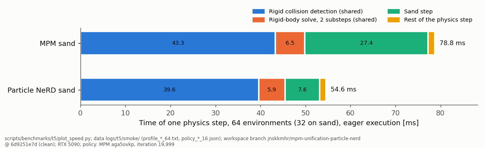
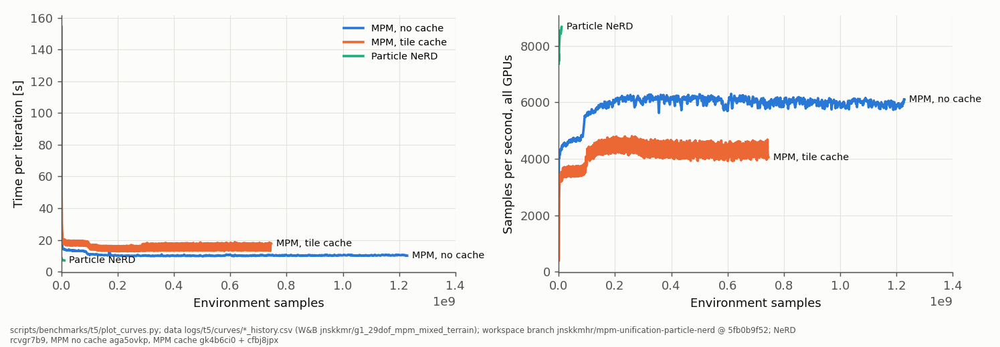
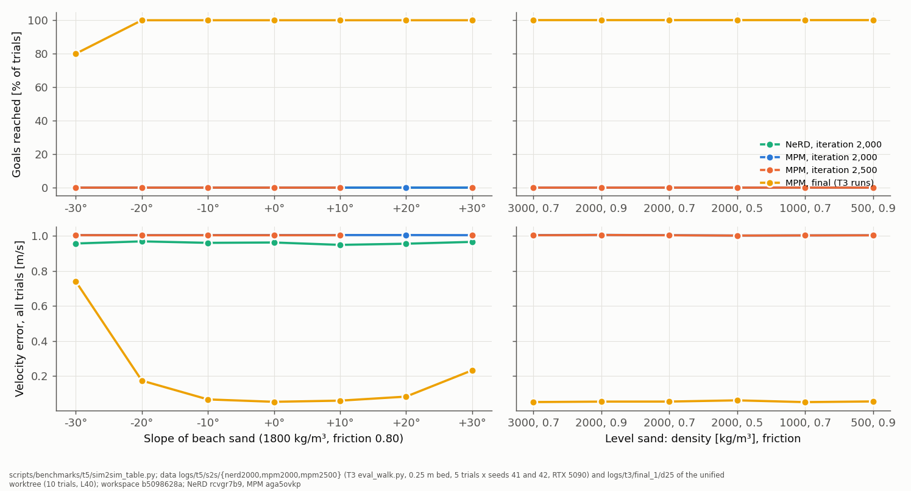

A G1 walking policy trained on Particle NeRD instead of MPM
Slides built 2026-11-25 19:51 PST. Every result is unchecked. The record is outputs/T5.md. Status: Training running: iteration about 5,400 of 20,000 at 18:46 PST on 2026-11-25; sim-to-sim measured at iterations 4,500 and 5,000. Unchecked.
Particle NeRD now steps the sand of the mixed-terrain G1 task and a corrected training is running; on one GPU an environment step takes 184 ms against 274 to 326 ms with MPM, and the NeRD sand yields about half to three quarters as much as MPM sand under the same policy.
Correction, 2026-11-25. Until 08:40 PST the NeRD step replayed from its recorded CUDA graph was faulty (found by the independent check): the network searched its neighbours in the wrong hash grid, and the sand barely moved. The first training (rcvgr7b9) ran on that sand and was cancelled at iteration 2,710. Everything measured on it is superseded and is not shown here.
Same task as the MPM reference run aga5ovkp: robot, terrain mix, rewards, PPO, 40 GPUs x 64 environments. Only the sand solver, the sand material (one sand, not randomized) and the particle sampling differ.
Sim-to-sim into MPM: measured at the checkpoints reached so far (criterion 5 below).
Setup
What was swapped unchecked
Only the sand changes: solver, material and particle sampling; the rest of the task is the reference's.
Training view of the Particle NeRD task (64 environments, 32 on sand; the sand particles are not drawn in the training view, as in the reference). Frame 60 of the video written by the local 4-iteration training test, isaaclab train … --task IsaacContrib-Velocity-G1-29dof-ParticleNeRD-Mixed --num_envs 64 --viz newton_gl --video, RTX 5090, workspace commit 0402c2ba6.
MPM reference (aga5ovkp)
Particle NeRD run
Sand solver
Implicit MPM, streaming pool, sleeping (solver_cfg_no_cache)
Particle NeRD network (local model, checkpoint d4cbed5e…), same streaming pool rule
Sand material
Randomized at reset: density 1000–3000 kg/m³, friction 0.3–0.9, stiffness, yield pressure
One sand: 1600 kg/m³, friction 0.48 (NeRD's training material), not randomized
Particles
Spacing 0.032 m, jitter ±0.025 m, radius and mass from the spawner
Spacing 0.032 m, jitter ±0.0064 m, radius 0.016 m, mass 0.0524 kg (NeRD's training data)
Stepped particles
Awake sand in a 1.2 m box around the pelvis
1,536 particles nearest the feet (of 20,000 per sand environment)
Everything else
Robot, 5 terrain types each once rigid and once sand, curriculum, 24 rewards, terminations, PPO, seed 42, 40 GPUs x 64 environments, 20,000 iterations
the same
How it was checked
scripts/benchmarks/t5/config_diff.py compares the resolved task with the W&B config of aga5ovkp (1,802 entries): 128 differ, all in the groups above or run-time paths. It also showed that the worktree's command config had changed since the reference (standing environments 0.2 → 0.0); the NeRD task uses the reference's 0.2. Files: logs/t5/reference/diff_*_vs_aga5ovkp.json.
Criterion 1
Rollout error against horizon
Not done in this session.
Not done. The request for this night was the combined code and the policy training. Related, measured in closed loop with the MPM policy: the two fidelity slides near the end.
Criterion 2 · speed (GPU time)
Throughput and memory against MPM unchecked
On one GPU the NeRD environment step is 1.5 to 1.8 times faster than MPM's and uses a fifth of the memory; the sand step alone is 3.6 times faster, and rigid collision detection, shared by both, now dominates the step.
64 environments (32 on sand) on one RTX 5090, MPM policy walking, CUDA graph
Particle NeRD (corrected step)
MPM, reference config
Environment step, two runs [ms]
184.2, 184.4
325.9, 274.4
Environment steps per second
347, 347
196, 233
GPU memory of the process [MiB]
3,430
17,392

Time of one physics step by part, measured eagerly (no CUDA graph, device synchronized around every call), zero actions (the robots are falling), 64 environments of which 32 on sand, second half of 30 environment steps. Eager execution was not affected by the graph fault. Script scripts/benchmarks/t5/profile_step.py and plot_speed.py; data logs/t5/smoke/profile_{mpm,nerd}_64.txt; workspace commit 6d9251e7d; RTX 5090. MPM: task IsaacContrib-Velocity-G1-29dof-MPM-Mixed, physics=solver_cfg_no_cache.
Training on OSMO (W&B Perf/*)
Particle NeRD, corrected run
MPM aga5ovkp
GPUs x environments
40 x 64 (NVIDIA L40)
40 x 64 (NVIDIA L40S)
Iterations so far
5,407
20,000
Mean time per iteration so far [s]
6.49
11.20 over the same iterations

Time per iteration (collection plus learning) and samples per second of all GPUs against samples, rolling mean over 50 iterations. Script scripts/benchmarks/t5/plot_curves.py; data logs/t5/curves/*_history.csv (W&B); workspace ~/isaac/worktrees/mpm-unification/IsaacLab-particle-nerd, branch jnskkmhr/mpm-unification-particle-nerd, commit 4752f8bbe (clean). The MPM runs used L40S (no cache) and L40S then L40 (cache); the NeRD run uses L40, so this is not a same-GPU comparison.Conditions and limits
One GPU, same GPU for both: the NeRD environment step is 1.5 to 1.8 times faster (184 ms against 274 and 326 ms; the MPM time differs by 19% between two identical runs because the reference config draws the sand material at random at every reset).
The sand step alone is 3.6 times faster eagerly (7.6 against 27.4 ms), but rigid collision detection (robot link meshes against the terrain mesh, the same code in both tasks) is the largest part of the eager physics step with either sand solver (about 40 ms). Its share under the recorded graph was not measured.
Iteration time depends on the training stage (resets are expensive and episodes are short at the start), and the two trainings ran on different GPU types, so the OSMO comparison is indicative.
MPM out-of-memory point by environment count: not measured.
Criterion 2 · speed, sand step only
The sand step alone: Particle NeRD against MPM, and where its time goes unchecked
On one L40 the Particle NeRD sand step takes 9.2 ms against 37 ms for MPM with the same sand and 44 ms with the training task's sand (4.0 to 4.8 times faster, with Particle NeRD stepping 1,536 of 20,000 particles per sand environment); the four transformer blocks are about 46% of it.
One sand step, 64 environments of which 32 on sand
Time [ms]
Times faster than MPM with the same sand
MPM, the training task's sand (randomized material)
44.3
–
MPM, the sand of the NeRD task (1600 kg/m³, friction 0.48)
37.0
1.0
Particle NeRD, 1,536 stepped particles
9.2
4.0
Stepped particles per sand environment (of 20,000)
Sand step [ms]
Times faster than MPM, same sand
Environment step, walking [ms]
Lowest foot origin above the surface [cm]
Particles moved over 2 cm, per sand environment
Velocity error [m/s]
Episode ends per robot
1,536 (the task's setting)
9.2
4.0
222
-3.7
915
0.137
0.19
1,024
6.6
5.6
210
-3.5
881
0.141
0.22
768
5.1
7.3
203
-3.3
725
0.141
0.19
512
3.9
9.4
198
-2.6
655
0.141
0.19
256
2.7
13.6
190
-1.0
375
0.125
0.22
MPM, the training task's sand
44.3
–
380
-8.2
7,484
0.117
0.25
Stepping fewer particles is faster, but the sand then gives way less: the feet ride at -3.7 cm with 1,536 stepped particles and at -1.0 cm with 256 (MPM: -8.2 cm). The count is a constant of the task, not a test of which particles are at rest.
The whole environment step changes little (222 to 190 ms, MPM 380 ms), because rigid collision detection takes 40 ms of every physics step in both tasks; MuJoCo-Warp itself takes 0.4 ms per substep.
Why the rigid collision detection is slow, and what it costs
The MPM and the Particle NeRD driver turn every convex hull of the scene into a triangle mesh, because Newton's implicit MPM takes only triangle meshes as sand colliders. That also turns the robot's 22 link hulls into triangle meshes, which are not sand colliders (the feet are boxes), and the rigid collision pipeline then tests them as mesh against mesh with each other and with the two ground meshes of 1,024,048 triangles. Keeping the robot's link hulls convex removes this cost. The feet on the sand are untouched (they are boxes and the only sand colliders). Contacts between links of a robot and contacts of links other than the feet with rigid ground then go through convex hulls (3,705 rigid contacts with mesh links, 987 with convex links, the difference all between links); that the behaviour is equivalent is not shown: one run each, not compared step by step.
Sand solver
Robot links in the rigid collision detection
Collision detection per physics step [ms]
Environment step, walking [ms]
Environment steps per second
Lowest foot origin above the surface [cm]
Pelvis height on sand [cm]
Velocity error on sand [m/s]
Episode ends per robot, sand
Episode ends per robot, rigid ground
Particle NeRD
triangle meshes (the task)
40.08
222
289
-3.7
63.1
0.137
0.19
0.19
Particle NeRD
convex hulls
0.33
60
1,068
-3.4
64.4
0.139
0.19
0.19
MPM, the training task's sand
triangle meshes (the task)
48.39
381
168
-8.2
62.7
0.116
0.25
0.38
MPM, the training task's sand
convex hulls
0.34
202
317
-8.1
63.0
0.117
0.25
0.41
Whole environment step, Particle NeRD against MPM: 1.7 times faster with mesh links (the set-up every policy was trained on), 3.4 times faster with the links kept convex, a set-up no trained policy has used; MPM with its randomized training sand, Particle NeRD stepping 1,536 of 20,000 particles per sand environment, one run each. This is a step time, not a training speed-up.
With convex links one Particle NeRD physics step of 15.0 ms is: sand step 9.3 ms (62%), MuJoCo-Warp 0.8 ms, collision detection 0.3 ms, and 4.5 ms for everything outside the physics (observations, rewards, resets, policy). The sand step is now the largest part.
OSMO t5-convex-links-1, one clean NVIDIA L40, same conditions as above; the links are kept convex by scripts/benchmarks/t5/with_convex_links.py, a wrapper around the drivers' builder step, so no task file is changed. One run each, 400 environment steps, 64 environments of which 32 on sand.
Component by component (1,536 stepped particles)
Component
What it does
Measured [ms]
In the compiled step [ms]
Share of the sand step
Transformer blocks
four identical blocks
2.67 x 4
4.28
46%
· assign particles to slices
per particle and head: feature and distance scores to 64 slices
1.11 x 4
1.78
19%
· pool the slice tokens
weighted sum of the particles of a slice
0.28 x 4
0.46
5%
· attention between slices
64 by 64 per head
0.09 x 4
0.14
2%
· hand back to particles
weighted sum, a second particle-to-slice attention, output layer
0.47 x 4
0.76
8%
· feed-forward layer
per particle
0.43 x 4
0.69
8%
· two norms
0.12 x 4
0.20
2%
Neighbour search, particle convolution weights
hash-grid neighbours within 7.2 cm, 64-cell filter, packing state
1.43
1.43
16%
Collider convolution weights
the same filter for the 2 feet and the 5 pool walls
0.94
0.94
10%
Wrench solver
contacts, first body-velocity solve, iterations, hash grid
0.64
0.64
7%
Motion head
output layer per particle
0.73
0.29
3%
Local convolution layers
linear layers on the filter outputs
0.41
0.17
2%
Cloud context
summary of the whole cloud
0.26
0.11
1%
Collider encoder, context head
0.30
0.12
1%
Position tables
rotary position codes and slice distances, once per step
0.15
0.06
1%
Hash grid of the network
0.08
0.08
1%
Particle and collider feature kernels
0.06
0.06
1%
Copy, scatter, clamp to terrain, history
0.14
0.14
2%
Choose the stepped particles
every fourth step
0.01
0.01
0%
Every Warp kernel launch and every network layer of one sand step was recorded as its own CUDA graph, from the arguments of a real call while the policy walks, and the replay timed (40 replays). The network layers were measured without torch.compile (whole network 13.6 ms); the task runs it compiled (5.5 ms), so their times are scaled by 0.40 in the last two columns. The rows of a block are for one block.
What the rigid collision detection collides
The task uses Newton's collision pipeline for the rigid contacts (use_mujoco_contacts=False). Per robot it gets 28 colliding shapes: 2 boxes (the feet), 4 cylinders and 22 triangle meshes of 124 triangles (the links' convex hulls, turned into triangle meshes by the task). The ground is two triangle meshes of 1,024,048 triangles each (the terrain and the support under the sand). That is 26,240 shape pairs for 64 environments. Counted with scripts/benchmarks/t5/collision_info.py (logs/t5/ksweep/collision_info_64.json, RTX 5090). Shared by the MPM and the NeRD task; the task files are not changed here.
One NVIDIA L40 with nothing else on it (OSMO t5-nerd-profile-1 and t5-nerd-deep-profile-1, code bundle t5-nerd-stack:v2 = workspace 52e9364c9), 64 environments of which 32 on sand with 20,000 particles each, MPM policy aga5ovkp (iteration 19,999) walking for 60 environment steps before the recordings. Sand step: the solver's whole step recorded as one CUDA graph and replayed 40 times (graph_profile.py); the MPM state advances during the replays with the robots held, so its sand settles. Walking columns: nerd_smoke.py, 400 environment steps with the recorded graph, one run each. Data logs/t5/profile_osmo/*.json.
Criterion 3
Break-even
Not done.
Not done. Found so far: the network training of the bundled checkpoint ran about 30.6 h on 4 x L40 (about 122 GPU hours; workflow particle-nerd-local-v11-train-1 or …-restwin-train-1, not determined which). The GPU count of the data generation workflows was not read.
Criterion 4 · reward curves
Learning curves against MPM unchecked
After 5,407 of 20,000 iterations the corrected NeRD run is at reward 159.5 (MPM at the same iteration: 160.2); the rewards are not comparable as scores, because the NeRD task has one sand and the MPM task a range.
Mean episode reward against environment samples (left) and against training time (right; the sum of collection and learning time of every iteration), rolling mean over 50 iterations. Particle NeRD: W&B 657cyza6 (OSMO g1-nerd-mixed-no-cache-3, 40 x L40). MPM without cache: aga5ovkp (40 x L40S). MPM with tile cache: gk4b6ci0 continued by cfbj8jpx (still running). Script scripts/benchmarks/t5/plot_curves.py; data logs/t5/curves/*_history.csv; workspace ~/isaac/worktrees/mpm-unification/IsaacLab-particle-nerd, branch jnskkmhr/mpm-unification-particle-nerd, commit 4752f8bbe (clean).The same curves over the part of the training that the Particle NeRD run has reached (1.5 x its samples).Episode length, tracking error, terrain levelMean episode length over the part reached so far.Mean episode length; same runs and script.Velocity tracking error (W&B Metrics/base_velocity/error_vel_xy); same runs and script.Mean terrain level of the curriculum; same runs and script.
Metrics/success_rate is 0 in every iteration of both MPM runs, so there is no success curve to overlay.
Criterion 5 · sim-to-sim
The NeRD-trained policy in MPM unchecked
At iteration 5,000 of 20,000 the NeRD-trained policy walks level MPM sand of every tested material, but falls in half of the trials on the +20° slope, where the MPM policy of the same iteration does not fall.
Sand environments, 10 s
in Particle NeRD
in MPM, same sand
NeRD policy, iteration 5,000
0.12 ends, error 0.18 m/s, reward 0.221, foot -1.1 cm
1.00 ends, error 0.34 m/s, reward 0.117, foot -9.3 cm
MPM policy, iteration 5,000
0.12 ends, error 0.25 m/s, reward 0.198, foot -5.1 cm
0.12 ends, error 0.30 m/s, reward 0.196, foot -7.1 cm
MPM policy, final
0.25 ends, error 0.13 m/s, reward 0.205, foot -4.9 cm
0.38 ends, error 0.13 m/s, reward 0.192, foot -6.4 cm
The training task on its own commands: episode ends per robot, velocity tracking error, reward per step and lowest foot origin against the sand surface. 16 environments (8 on sand), 500 steps, terrain level 0, sand 1600 kg/m³ and friction 0.48, one run each. Script scripts/benchmarks/t5/sim2sim_checkpoint.sh (nerd_smoke.py); data logs/t5/s2s/*/task/in_{nerd,mpm}.json; RTX 5090.

T3's walking test in MPM (scripts/benchmarks/t3/eval_walk.py, 1.0 m/s command, 13 s, 5 m to the goal, 0.25 m bed): goals reached, velocity error of all trials and foot origin under load. Level beach sand, the +20° slope and four further materials on level ground (density in kg/m³, friction). 10 trials per point (5 trials x seeds 41 and 42), RTX 5090, shared with another job during the NeRD-policy runs. The NeRD policy's 5 failures at +20° are falls (orientation limit); the MPM iteration-5,000 policy's one failure per beach-sand condition is a side exit. NeRD policy: W&B 657cyza6, model_5000.pt, sha256 663b041c…; MPM policy: W&B aga5ovkp, model_5000.pt and model_19999.pt. Scripts scripts/benchmarks/t5/sim2sim_checkpoint.sh, sim2sim_table.py; data logs/t5/s2s/{nerd5000,mpm5000,mpm19999}. Unchecked.Numbers
Condition
NeRD, it 5,000: goals / time-outs / falls, velocity error of all trials [m/s]
MPM, it 5,000: goals / time-outs / falls, velocity error of all trials [m/s]
MPM, final: goals / time-outs / falls, velocity error of all trials [m/s]
beach sand, slope +0
10 / 0 / 0 of 10, 0.18
9 / 0 / 1 of 10, 0.24
10 / 0 / 0 of 10, 0.05
beach sand, slope +20
5 / 0 / 5 of 10, 0.37
9 / 0 / 1 of 10, 0.40
10 / 0 / 0 of 10, 0.08
level, dense sand
10 / 0 / 0 of 10, 0.24
10 / 0 / 0 of 10, 0.22
10 / 0 / 0 of 10, 0.06
level, light sand
10 / 0 / 0 of 10, 0.15
10 / 0 / 0 of 10, 0.26
10 / 0 / 0 of 10, 0.05
level, poppy seed packed
10 / 0 / 0 of 10, 0.17
10 / 0 / 0 of 10, 0.24
10 / 0 / 0 of 10, 0.06
level, poppy seed loose
10 / 0 / 0 of 10, 0.10
10 / 0 / 0 of 10, 0.26
10 / 0 / 0 of 10, 0.05
Criterion 5 · sim-to-sim, training task
The NeRD-trained policy on the training task's own terrain, in MPM unchecked
On the training task with NeRD's own sand, the NeRD-trained policy of iteration 4,500 walks on NeRD sand but falls on MPM sand: 13 episode ends on 8 robots in 10 s against 1 for the MPM-trained policy of iteration 5,000.
Robots on sand, 10 s
on Particle NeRD sand
on MPM sand, same sand settings
NeRD-trained policy, iteration 4,500
1 episode ends on 8 robots, error 0.19 m/s, reward 0.222 per step, feet -0.9 cm
13 episode ends on 8 robots, error 0.44 m/s, reward 0.090 per step, feet -9.0 cm
MPM-trained policy, iteration 5,000
1 episode ends on 8 robots, error 0.25 m/s, reward 0.198 per step, feet -5.1 cm
1 episode ends on 8 robots, error 0.30 m/s, reward 0.196 per step, feet -7.0 cm
The NeRD-trained policy of iteration 4,500 (657cyza6) in the playback task (0.35 m sand layer, forward command 0.5 m/s), camera on the robot of environment 0, 8 s. Left: Particle NeRD sand. Right: MPM with the same sand settings. Of the two robots on sand, 1 episode ended in the left run and 3 in the right run. The block under the robot is the simulated sand pool. Script scripts/benchmarks/t5/play_video.py; RTX 5090.
The feet of the NeRD-trained policy stay at -0.9 cm on NeRD sand and go to -9.0 cm on MPM sand. The MPM-trained policy sinks on both (-5.1 and -7.0 cm).
The other direction works: the MPM-trained policy walks on NeRD sand.
This is a different test from the previous slide. There: T3's straight-walk test (level sands and slopes), iteration 5,000. Here: the training task's own commands and terrain types at level 0, on NeRD's training sand (1600 kg/m³, friction 0.48), iteration 4,500.
Limits: 8 robots on sand, one seed, one run each. An episode end is any termination before the 20 s limit; the kinds were not separated. On rigid ground the four runs have 1, 1, 1, 1 episode ends on 8 robots. The two policies were also trained on different sand ranges (one sand against a range).
scripts/benchmarks/t5/nerd_smoke.py: 16 environments (8 on sand), 500 steps, terrain level 0, MPM preset solver_cfg_no_cache with --nerd_sand; checkpoints 657cyza6/model_4500.pt and aga5ovkp/model_5000.pt; data logs/t5/s2s4500/*.json; RTX 5090, shared with another job, which does not affect these numbers.
Criterion 6
What NeRD was trained on, and where the task leaves it unchecked
NeRD is extrapolating in every sand environment: it never saw a foot load, a tilted floor, slopes above 10° or the task's waves.
NeRD training data
Mixed-terrain task with NeRD
Material
one dry sand: 1600 kg/m³, friction 0.48, no cohesion
the same (task reduced to it); the MPM policy saw 1000–3000 kg/m³, friction 0.3–0.9
Bed
2.0 x 1.2 x 0.30 m in a tray with a horizontal floor
pool of 1.6 x 1.6 x 0.25 m that follows the pelvis; the floor is the terrain
Surface
flat; plane tilted ±10°; wave of 0.06 m amplitude, 1.2 m long
layer of constant depth on slopes up to 22.9°, waves up to 0.4 m amplitude, steps of 2–8 cm
Bodies
one box, cube, sphere or cylinder of 0.84–4.4 kg: pushed, pressed, dropped, resting
two feet of a walking 35 kg humanoid
Discretization
particle spacing 0.032 m, MPM voxel 0.04 m, 5 ms
the same
Source: scripts/neural/scene.py, dataset.py and the checkpoint's stored config in ~/isaac/IsaacLab-particle-nerd (commit c83f1b0b8); task side from the W&B config of aga5ovkp.
Caveat · fidelity
The corrected NeRD sand yields, but less than the MPM sand it replaces unchecked
With the same sand and the same policy the feet ride about 1.5 to 4.5 cm higher in NeRD than in MPM, and about half as many particles are displaced.
MPM policy aga5ovkp (iteration 19,999) walking for 10 s with the task's commands, 16 environments (8 on sand, 8 on rigid ground), terrain level 0, sand 1600 kg/m³ and friction 0.48 in both simulators, one run each. The foot origin is about 3.5 cm above the sole. Script scripts/benchmarks/t5/nerd_smoke.py, plot_speed.py; data logs/t5/fixed/policy_nerd_16.json (corrected step, workspace 52e9364c9), logs/t5/smoke/policy_mpm_16.json; RTX 5090.Numbers
Particle NeRD sand (corrected)
MPM sand
Rigid ground
Lower foot origin above the surface [cm]
-4.9
-6.5
+2.5
Pelvis height above the surface [m]
0.630
0.643
0.707
Vertical sand force on the feet [N]
295
346
365 (rigid contact)
Velocity tracking error [m/s]
0.127
0.122
0.054
Reward per step
0.202
0.193
0.256
Particles displaced by more than 2 cm, per sand environment (8 environments, 5 s)
469
2,228
One run per number; the value moves with the test: 64 environments give -3.5 and -3.7 cm for NeRD (two runs) against -8.1 cm for MPM, 8 environments give +0.1 to -1.6 cm for NeRD over three seeds.
MPM's sinkage is that of the training discretization (4 cm voxels, 0.25 m bed); T3 evaluates at 2 cm voxels.
The same policy earns about as much reward per step on NeRD sand as on MPM sand here (0.202 against 0.193).
Caveat · fidelity, force
Where the sand carries the foot unchecked
NeRD carries most of the stance force with the sole at the surface and less once the foot is deep; MPM builds the force up as the foot sinks.
Left: mean vertical sand force on one foot in 1 cm bins of the height of the foot origin above the undisturbed surface (the sole is 3.5 cm below the origin; dashed line: sole at the surface). Right: where the loaded samples (above 20 N) are. Same policy (MPM aga5ovkp, iteration 19,999), commands and seed in both simulators, 16 environments (8 on sand), 500 steps, sand 1600 kg/m³ and friction 0.48. Script scripts/benchmarks/t5/nerd_smoke.py --trace, fidelity_report.py; data logs/t5/fixed/trace_nerd.npz (corrected step, workspace 52e9364c9), logs/t5/fidelity/trace_mpm.npz; RTX 5090.
Mean vertical sand force on both feet: 317 N in NeRD against 338 N in MPM; in NeRD part of the weight goes to the rigid support under the sand, which some feet reach (5% of the loaded samples have the foot origin below -18.8 cm; MPM: -10.2 cm).
NeRD was trained on single objects of 0.8 to 4.4 kg (box, cube, sphere, cylinder; pushed, pressed, dropped, resting) and falling sand, on a 2.0 x 1.2 x 0.3 m bed of one dry sand (flat, ±10° slope, 6 cm wave), never on a foot load.
Whether the remaining difference comes from the network or from the wrench solver was analysed only on the faulty step; that analysis is withdrawn and has not been repeated.
Not done / caveats
What weakens these results
The corrected policy is still training, and nothing about transfer is measured yet.
Training not finished. Training running: iteration about 5,400 of 20,000 at 18:46 PST on 2026-11-25; sim-to-sim measured at iterations 4,500 and 5,000. Unchecked.
A fault in the first version. With the active-particle selection the NeRD step used two hash grids; replayed from a CUDA graph the network then read the wrong grid. Found by the independent check, fixed in workspace commit 52e9364c9 (graph and eager now agree over 300 steps for seeds 42, 54 and 7). The first training (rcvgr7b9, cancelled at iteration 2,710) and every graph-mode number before the fix are superseded.
Two changes at once. The NeRD policy sees one sand, the MPM policy saw a range. A difference between the policies is not attributable to the simulator alone, and the reward curves are not comparable as scores.
The NeRD sand yields less than MPM sand and carries the foot differently (previous slides).
Different GPU type. NeRD on L40, the no-cache MPM reference on L40S.
An illegal memory access at environment seed 54 in the first full run is probably the same hash-grid fault; that was not tested. Graphs are also recorded right after the first step now.
Infrastructure. The nodes of isaac-lab-l40-06 cannot reach the OSMO data storage; the code is shipped as a W&B artifact (jnskkmr/t5_code_bundles) and checkpoints exist on W&B only.
No cache counterpart. A tile cache for the neural solver was not built.
Not done: sim-to-sim of the later checkpoints, rollout error (criterion 1), break-even (criterion 3), MPM out-of-memory point, hardware.